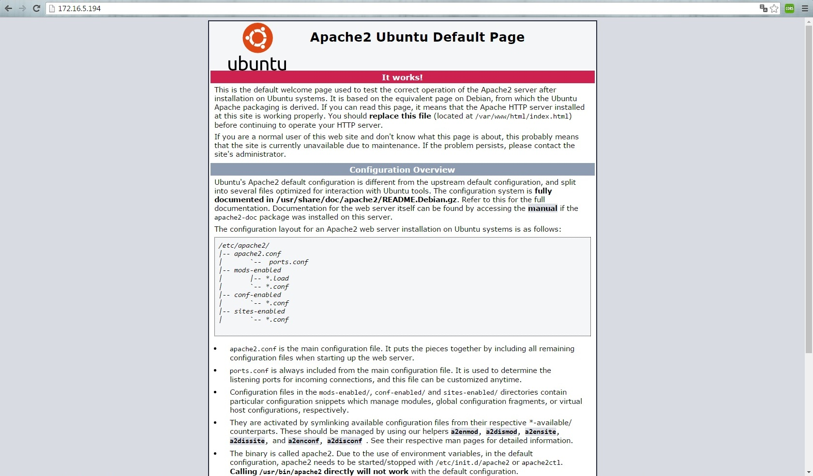

LAMP es el acrónimo usado para describir un sistema de infraestructura de internet que usa las siguientes herramientas:
- Linux, el sistema operativo; En algunos casos también se refiere a LDAP.
- Apache, el servidor web;
- MySQL/MariaDB, el gestor de bases de datos;
- Perl, PHP, o Python, los lenguajes de programación.
La combinación de estas tecnologías es usada principalmente para definir la infraestructura de un servidor web, utilizando un paradigma de programación para el desarrollo.
A pesar de que el origen de estos programas de código abierto no han sido específicamente diseñado para trabajar entre sí, la combinación se popularizó debido a su bajo coste de adquisición y ubicuidad de sus componentes (ya que vienen pre-instalados en la mayoría de las distribuciones linux). Cuando son combinados, representan un conjunto de soluciones que soportan servidores de aplicaciones.
Colocamos el siguiente comando en la consola:
apt-get install apache2
Una vez instalado el servidor apache nos dirigimos al navegador y colocamos la direccion http://localhost o la direccion http://127.0.0.1 y nos debe mostrar una pantalla asi:

nos vamos al archivo fqdn para cambiar el nombre del servidor
vim /etc/apache2/conf-available/fqdn.conf
y agregamos el texto para colocar el nombre del servidor
ServerName localhost
Habilitamos la configuracion FQDN
a2enconf fqdn
y finalizamos reiniciando nuestro servidor
/etc/init.d/apache2 reload
/etc/init.d/apache2 restart
La instalacion en si del complemento PHP5 es muy sencillo vas con ejecutar los comandos
apt-get install libapache2-mod-php5 php5 php5-mcrypt
Es estos paquete de instalacion incluimos los paquetes para que apache sea capaz de soportar y usar php
En este caso ya que trabajamos en un Ubuntu 14.04 la version de mysql que instala por defecto es la 5.5, he instalaremos la 5.6 por ciertas nuevas funcionabilidades, se instala de la siguiente manera
apt-get install mysql-client-core-5.6 mysql-client-5.6 mysql-server-core-5.6 mysql-server-5.6
Dentro de la misma instalacion del mysql-server se nos pedira una contraseña para el usuario root
ya que debe trabajar en conjunto las tres herramientas debemos instalar librerias para usar en conjunto php y mysql, asi:
apt-get install php5-mysqlnd php5-mysqlnd-ms php5-cli
Para estar seguros que la extension mcrypt(encriptación de datos) este habilitada, usamos el siguiente comando:
sudo php5enmod mcrypt
finalmente recargamos nuestro servidor web
/etc/init.d/apache2 reload
/etc/init.d/apache2 restart
En este caso ya que trabajamos en un Ubuntu 12.04 la version de mysql que instala por defecto es la 5.5,se instala de la siguiente manera
apt-get install mysql-client-core-5.5 mysql-client-5.5 mysql-server-core-5.5 mysql-server-5.5
Dentro de la misma instalacion del mysql-server se nos pedira una contraseña para el usuario root
ya que debe trabajar en conjunto las tres herramientas debemos instalar librerias para usar en conjunto php y mysql, asi:
apt-get install php5-mysqlnd php5-mysqlnd-ms php5-cli
Para estar seguros que la extension mcrypt(encriptación de datos) este habilitada, usamos el siguiente comando:
sudo php5enmod mcrypt
finalmente recargamos nuestro servidor web
/etc/init.d/apache2 reload
/etc/init.d/apache2 restart